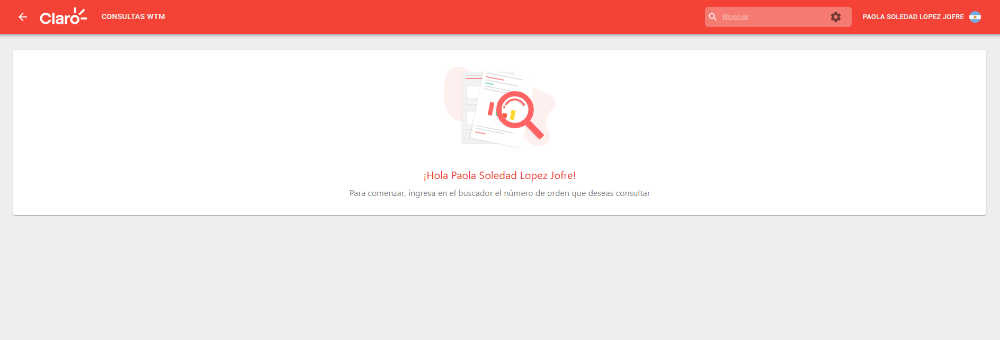
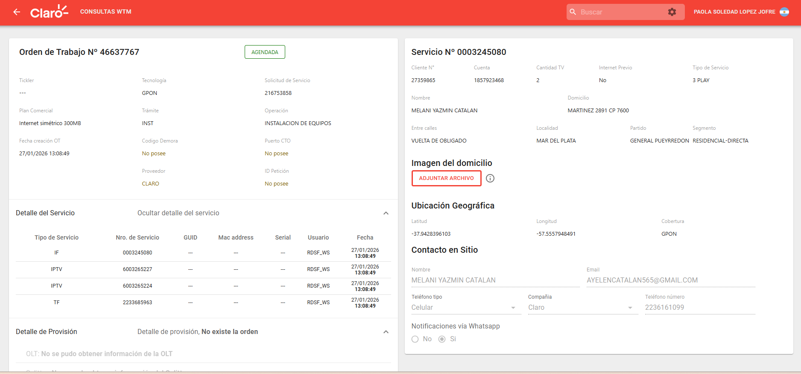
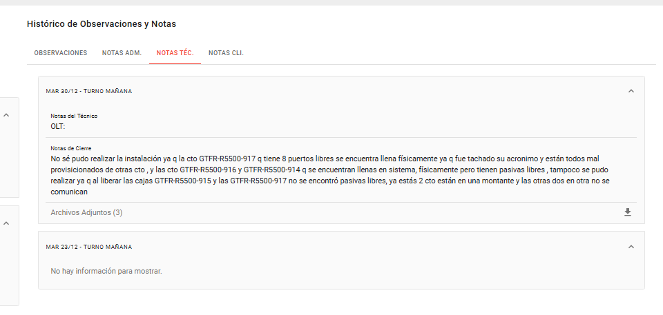
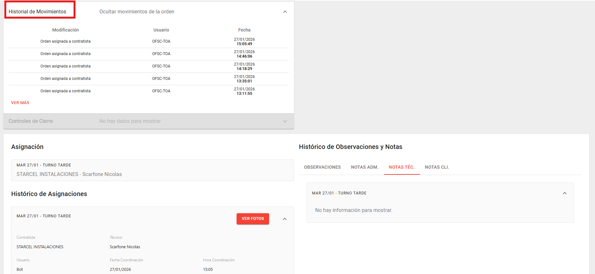

Este instructivo detalla el uso de la plataforma WFM (Work Force Management) para la consulta técnica y gestión de órdenes de trabajo.
Para ingresar a la plataforma, acceda a través del siguiente enlace:
Inicie sesión utilizando su usuario de red y la contraseña correspondiente.
 INTERFAZ DE LOGIN
INTERFAZ DE LOGIN
Dentro del sistema, diríjase al menú superior y seleccione el BUSCADOR para cargar la orden de trabajo y realizar la consulta del estado de la misma.

MENÚ DE CONSULTAS WTM E INVENTARIOSIngrese el número de orden en el buscador para visualizar la información técnica de la OT:
- Datos del cliente (Nombre, contacto, domicilio).
- Ubicación geográfica y coordenadas.
- Detalle del servicio y tecnología (GPON).

VISTA GENERAL DE LA ORDEN DE TRABAJOEn la parte inferior podras observar: Notas Administrativas, Notas del Técnico y descargar Archivos Adjuntos con evidencias de trabajos anteriores.
- Observaciones informadas por el area de ventas.
- Notas Administrativas acentadas por el area de Mesa de Depacho.
- Notas Tecnicas acentadas por un tecnico de una visita anterior y descargar fotos adjuntas.

PANEL DE OBSERVACIONES Y DOCUMENTACIÓNDesplegando el Historial de Movimientos podemos observar el detalles de la trazabilidad.
- Asignaciones a contratas.
- Estados históricos.

TRAZABILIDAD Y ESTADOS DE LA ORDEN